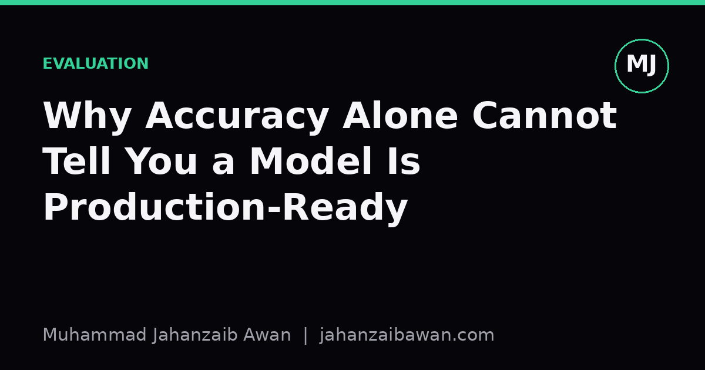

Why Accuracy Alone Cannot Tell You a Model Is Production-Ready
A single accuracy number can hide class imbalance, shifting data, and costly error types. Here is what to check before you trust a model with real users.

The number that lies by omission
Accuracy is the first metric most of us learn and it remains the most misused. It answers a narrow question: out of all predictions, how many were correct? That is a reasonable summary when classes are balanced and every mistake costs roughly the same. In production, neither of those conditions usually holds, and that is where accuracy quietly stops meaning what people assume it means.
Consider a fraud detection model evaluated on a test set where ninety nine percent of transactions are legitimate and one percent are fraudulent. A model that simply predicts 'not fraud' for every single transaction scores ninety nine percent accuracy. It has learned nothing useful, yet the headline number looks excellent on a slide. Anyone who reports only accuracy here, intentionally or not, is presenting a result that sounds like competence but is actually complete failure on the task that matters.
This is not a hypothetical edge case confined to fraud. Rare disease screening, equipment failure prediction, spam filtering at the tail end, and churn detection on loyal customer bases all share the same shape: the interesting class is small, and accuracy rewards ignoring it. If I am building any of these systems, I treat a high accuracy figure with suspicion until I have seen the breakdown underneath it.
A worked example with real numbers
Suppose we have a thousand transactions, ten of which are fraudulent. Our model predicts nine hundred and eighty nine as not fraud and eleven as fraud. Of the eleven flagged, three are genuinely fraudulent and eight are false alarms. Of the nine hundred and eighty nine predicted as legitimate, seven are actually fraud that slipped through.
Accuracy here is nine hundred and eighty two correct predictions out of a thousand, which is ninety eight point two percent. It looks almost as good as the lazy all-negative model from before. But look at recall, the proportion of actual fraud cases we caught: three out of ten, or thirty percent. Seven out of ten frauds went completely undetected. Precision, the proportion of fraud alerts that were genuine, is three out of eleven, about twenty seven percent. Most of the alerts sent to the investigation team were false positives.
Now imagine the business cost. Each missed fraud costs the company an average of two hundred pounds in losses. Each false alarm costs twenty pounds in analyst time to investigate and clear. The missed frauds alone cost one thousand four hundred pounds, more than ten times the cost of the false alarms. A metric that treats these two error types as interchangeable, which is exactly what accuracy does, cannot tell a decision maker whether this model is safe to deploy or whether it will bleed money quietly every month.
This is why I always build a confusion matrix before trusting a single summary number, and why I push to attach rough cost weights to each cell wherever the business can supply them, even approximate ones. A model that is ninety eight percent accurate but misses seventy percent of the costly cases is not a nearly-finished product. It is a different model entirely from one that catches eighty percent of fraud at the price of a slightly lower overall accuracy.
Beyond the confusion matrix: shift and stability
Even with precision, recall, and a cost-aware metric like F-beta or expected monetary value in hand, there is a second trap: the test set itself might not represent what the model will see in production. If a test split was built from the same time window as training data, or the same source population, it can look favourable without proving anything about tomorrow's traffic. This is the leakage problem in disguise: not code leaking labels into features, but a static evaluation leaking an unrealistically stable world into a metric that will be used to justify deployment.
A model trained and tested on transactions from last year might show strong precision and recall in that report, then degrade within weeks once fraud patterns shift, a new product line launches, or customer behaviour changes seasonally. The honest way to probe this is a temporal split: train on older data, evaluate on the most recent slice, and watch whether performance holds. If recall drops sharply on recent data relative to the original test set, that gap is the real production risk, and no amount of accuracy on the old split will reveal it.
Calibration matters too. A model can rank cases correctly, putting the riskiest transactions near the top, while still being badly miscalibrated in its stated probabilities. If a downstream system treats a predicted probability of 0.9 as meaning ninety percent likelihood, but the model is systematically overconfident, every threshold decision built on that number inherits the error. Checking calibration, through a reliability diagram or Brier score, is a separate question from checking accuracy and neither one substitutes for the other.
What readiness actually requires
None of this means accuracy is useless. It is a fine sanity check and a reasonable tie-breaker when classes are balanced and errors are symmetric in cost. The mistake is treating it as sufficient evidence of readiness on its own, particularly for imbalanced problems or anything where false positives and false negatives carry different real-world weight.
Before I would call a classifier production-ready, I want a confusion matrix broken down by class, precision and recall reported separately, a cost-weighted metric tied to actual business consequences where that information exists, a check for performance drift across a genuinely out-of-time or out-of-distribution split, and a calibration check if the output probabilities feed into any downstream threshold or ranking decision. None of these are exotic techniques. They are a half day of extra analysis that routinely changes the decision from 'ship it' to 'not yet'.
The practical habit worth building is simple: whenever a single accuracy number is offered as proof a model works, ask what the class balance is, what the two error types cost, and whether the test data reflects tomorrow rather than last year. Those three questions catch most of the failures that accuracy alone will never show you.